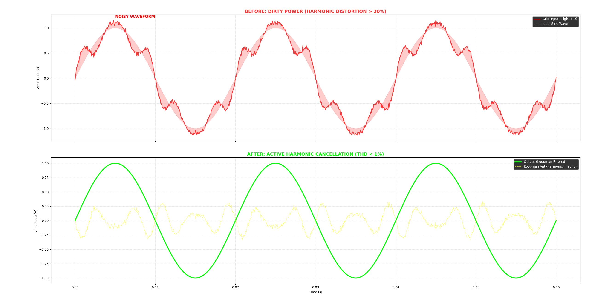

Industrial grids are dirty. Variable Frequency Drives (VFDs), welding machines, and archaic inverters inject "noise" into the power lines. This noise, known as Harmonics, causes motors to overheat and sensitive electronics to fail.
The traditional solution is to install massive capacitor banks or passive filters. They are heavy, expensive, and can accidentally create resonance that blows up the system.
The "Anti-Noise" Solution
Instead of trying to block the noise with heavy iron, Bangsaen AI uses math to cancel it out. Think of it like noise-canceling headphones for the power grid.
We use the Koopman Operator to perform real-time spectral decomposition, identifying the rogue frequencies (e.g., 250Hz, 350Hz) and injecting an precise "inverse signal."

"We don't need heavy filters to clean the power. We just need to whisper the exact opposite of the noise."
As seen in the graph above, the yellow dashed line is the "Koopman Injection." Notice how it mirrors the jagged edges of the dirty red signal perfectly? That is active cancellation in action.
Got Dirty Power?
Send us your THD data logs. We will simulate how much "Anti-Noise" is needed to clean your grid.
Request THD Analysis